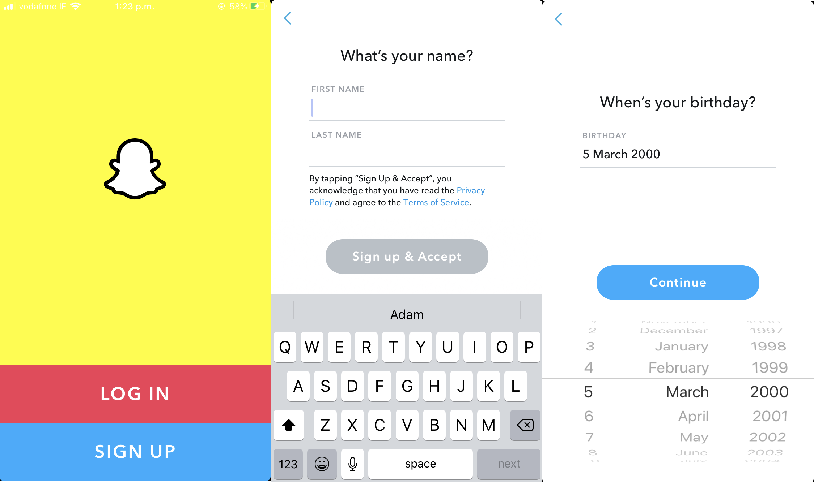

This is the Snapchat Page!
Here you will find information on How to find, install and make the most of the App!
Snapchat is a very complex program that helps connect people like a messaging service. However, its niche is the fact the apps theme revolves around Picture and Video Media to tell a story or message.
Snapchat is a popular messaging app that lets users exchange pictures and videos (called snaps) that are meant to disappear after they're viewed. It's advertised as a "new type of camera" because the essential function is to take a picture or video, add filters, lenses or other effects and share them with friends.
How to sign up...
First you will need a phone with internet connection as this app is only availible on Android and iOS devices.
Secondly, access the playstore or appstore depending on what device you have. Search for "Snapchat" and download it. It should be the first result and resemble the logo above.

Once you have installed the app you will be greeted with this screen. Simply make an account by filling out the necessary details like Name, Date of Birth and Password.
Once you have completed all this you should see a screen like this! This is your Snapchat. You can take pictures and videos to send to friends or display on your "Story".

How to send a snap...
One of the main functions of Snapchat is to take Pictures and Videos and send them to friends. Here's how you can do that...
-First you will need to be on the viewfinder page and frame you subject.
-Take your Picture/Video!
-After you hhave taken your picture/video, you can edit it. Adding text, stickers and gifs!

Useful Tip!
Snapchat is seen as a social media messaging platform for the younger generation, which is what it is. However, Snapchat is very complex program with a wide range of networking possibilites that can help progress the workplace or college environment in terms of connectivity.
One very useful tip that Snapchat provides is the "Group" and "Group Story" features.
Here's how to access these features:
-From the Viewfinder Page select your profile at the top left.
-Next, press "+ New Story" and select "Custom Story". This will allow members of the group to also post Pictures/Videos.
-Once you have done this, simply select who you want added to the group story and press "Create Story".
You will now have created the story and it is now active for you and the members involved!